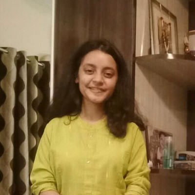

I just found a place where asking "Why?" became part of the job.
How I usually start
01ListenReal people, real insights
02QuestionFind the thing worth solving
03Make sensePatterns and constraints
04MakeIdeas before pixels
05TestLearn what holds up
I have worked with
The shift, made visible
Same thinking, a different material.
Architecture starts with a floor plan, walls, dimensions, circulation, where to stand before anyone says a word. Product design asks the same question in a different material.
01 · Blueprint
A few questions I have spent time answering.
Product problems, systems and experiences I have worked on.
B2B SaaSCRMWorkflow Design
Giving managers more control over how leads are assigned
Leadrat is a CRM used by real estate brokerages to manage their sales pipeline. Leads were automatically assigned one after another but some teams needed to distribute them differently based on their sales team's capacity. I designed a way to set those rules without manually assigning every lead.
Sole Product Designer · with PM and Engineering
4places to set a rule: user, team, property or project
Simple for one assignment. Limited when the rules get more complex.
Configure the logic once.
Assignment base
Sequential BasedPercentage Based
Assignment type
UserTeamPropertyProject
Lead rotationDisabled
Team leader · Shift time · Number of rotations · Rotation time
Let the system distribute the leads.
Agent A 50%Agent B 30%Agent C 20%
Each lead goes to whoever is furthest behind their share.
Agent A50%0
Agent B30%0
Agent C20%0
Deficit recalculated after every lead.
leadrat · global config
123
1
Assignment baseSequential or percentage based
2
Assignment typeUser, team, property or project
3
Lead rotationOptional, by shift time
AI productDecision design
Why do bad ideas survive meetings?
Good product ideas rarely die because nobody had them. They stall because the right perspectives were not in the room while the idea was still flexible. Boardroom AI is a working prototype that puts an idea in front of six conflicting perspectives in a single sitting. They question it, argue with each other and end with a verdict on what to do first. I designed how that room behaves, not only how it looks.
6perspectives, each asking a different question
8behaviour rules written into every seat
3debate stages, from first reaction to a clear next step
Dots show how strong each idea is. Watch what the room does.
Idea A
Idea B
Idea C
Idea D
Four ideas walk into a meeting. Only one walks out.
60 second experienceMobile product
Know what to do before you step off the train
Maps gets you to the city. It leaves the station itself to guesswork. I designed a 60 second mobile experience for travellers new to a city. It prepares you before you arrive, then guides you in a glance once you do, and sends you towards local transport instead of replacing it.
Sole Product Designer · KSR Bengaluru
60sthe window this designs for, from train door to next ride
Fare, time and walk on every cardUnderstood in one look
2
All four modes in one listCompare before choosing
3
One clear next stepDirections follow the choice
FintechConsumer UX
People could open an FD. They just could not easily understand the decision.
Opening a Fixed Deposit is easy. Feeling sure about it is not. Before committing their money, people wanted clear answers to three questions: what will I get back, how long is my money locked, and what happens after it matures. In the existing flow those answers arrived late, or on screens away from the decision. I redesigned the experience so people understand the outcome before they commit.
Three questions, and none are answered where the decision is made.
1. See the outcome while you decide.
Deposit₹50,000
Maturity amount₹53,725
Total gains₹3,725
2. Compare tenures in one column.
1 year7.25%
3 years7.25%
5 years7.90%
10 years8.80%
3. Review once, then commit.
Tenure1 year 23 days
Interest rate7.25% p.a.
Auto renew at maturityYes
Book FD is the only commitment.
123
1
Maturity and gainsRight beside the amount
2
Rate and yieldAttached to the tenure
3
Auto renewalA visible switch, not buried
Do not take my word for it.
What the people I have worked with say, and what the AI tools I work with said too.
Karthik RajeevSenior Product Designer
Seeing her eventually grow into someone who could lead the design team at Leadrat is something I am genuinely proud of. She is the kind of designer who does not just execute requirements, she gets involved in the problem, challenges assumptions, and takes responsibility for finding a better solution.
Managed Vedanshi directly
Kiran RajputSenior AI Product Manager
Vedanshi has a rare ability to translate complex product requirements into clean, intuitive, and user friendly designs.
Worked with Vedanshi on different teams
Mounika PSenior Full Stack Developer
…Vedanshi had this ability to step back, understand the real problem, and turn it into something simple, intuitive, and meaningful for the user.
Worked with Vedanshi on the same team
SK NowlakQA Lead, SDET
What truly stands out about her is her creativity, ownership, and way of thinking. She approaches every task as if the product were her own, not just as someone working for the company.
Worked with Vedanshi on different teams

Maitri UpadhyayBusiness Analyst | Product Owner
I had the pleasure of working with Vedanshi at Leadrat and was impressed by her creativity, attention to detail, and strong understanding of user experience and product requirements. She has a user centric approach, excels at translating complex requirements into intuitive and visually appealing designs, and is always collaborative, proactive, and open to feedback.
Worked with Vedanshi on the same team
Midhun MProduct Designer for the AI era
I had a great experience working with you at Leadrat. You consistently brought a thoughtful and user focused approach to design, with a strong ability to understand problems, explore different solutions, and turn complex requirements into clear and intuitive experiences.
Reported to Vedanshi directly
Amit PandeyApplication Engineer II
Working with Vedanshi as my senior UI/UX designer teammate has been an inspiring and enjoyable experience. She has a rare ability to blend creativity with practicality, ensuring that every design not only looks visually appealing but also creates a seamless user experience.
Worked with Vedanshi on different teams
Things I was wrong about
Every one of these cost me something.
01
I thoughtA cleaner interface makes a product better.
At Leadrat I spent weeks making the screens cleaner. A salesperson looked at it and said he still did not know what to do first. The design was nicer, but the product was not better.
Nicer is not better
02
I thoughtFollow the brief, it is the actual job.
I used to treat a brief as a task. Now I treat it as a guess. If I do not check the guess first, I just solve the wrong problem neatly.
The brief is a guess
03
I thoughtAI is a way to produce faster.
I thought AI was for producing faster. Now I use it to poke holes in my own ideas early, so I do not fall in love with the first one.